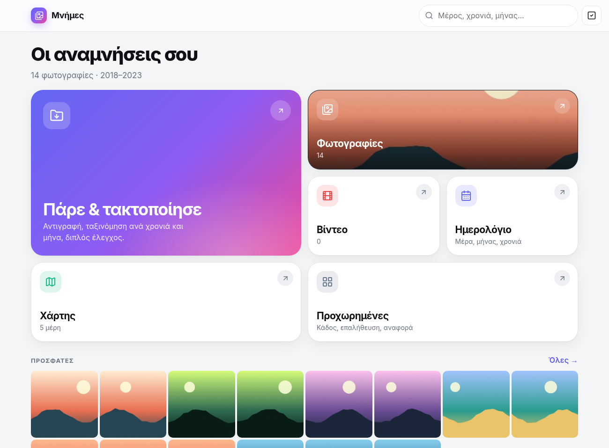
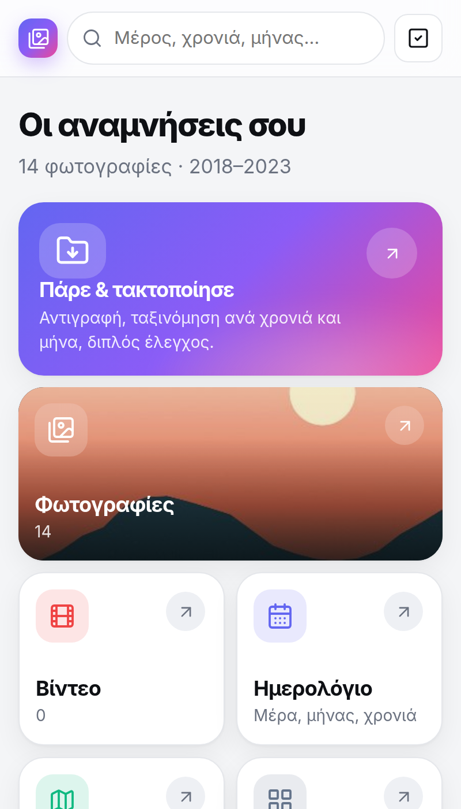

Μαζεύει φωτογραφίες και βίντεο από φακέλους, δίσκους και USB, και τα βάζει σε φακέλους ανά χρονιά, μήνα και μέρος. Με ημερολόγιο και χάρτη. Δωρεάν, χωρίς λογαριασμό, και τίποτα δεν ανεβαίνει στο ίντερνετ.


Το αρχείο «Mnimes.html» μπαίνει στις Λήψεις. Δεν χρειάζεται εγκατάσταση.
Διπλό κλικ. Αν ανοίξει άλλος browser, δεξί κλικ → Άνοιγμα με → Chrome.
Διαλέγεις πού θα μπουν και από πού θα μαζευτούν. Τα υπόλοιπα γίνονται μόνα τους.
| Υπολογιστής | Chrome ή Edge (νέα έκδοση): κάνει τα πάντα, δηλαδή μάζεμα, ταξινόμηση, έλεγχο και σβήσιμο. |
| Safari, iPhone, Firefox | Μόνο προβολή: ημερολόγιο και χάρτης για όσες φωτογραφίες διαλέξεις. Δεν μπορούν να γράψουν σε φακέλους. |
| Ίντερνετ | Για τον χάρτη, τα ονόματα των μερών και τις ημερομηνίες λήψης. Στέλνονται μόνο στρογγυλεμένες συντεταγμένες, ποτέ φωτογραφίες. |